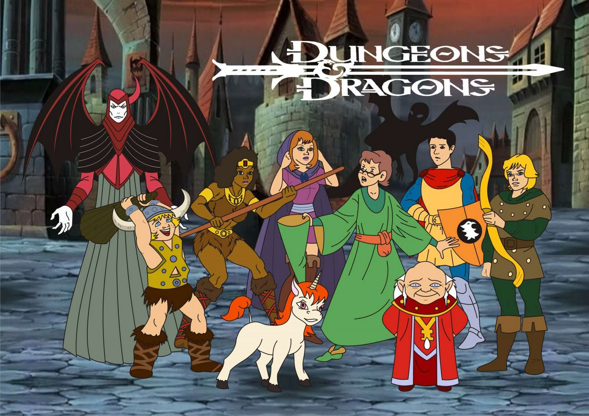
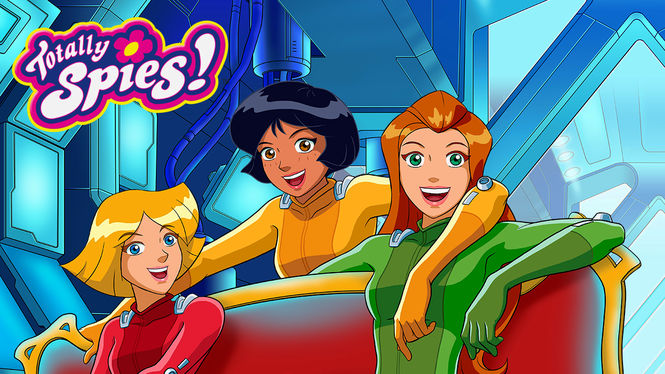
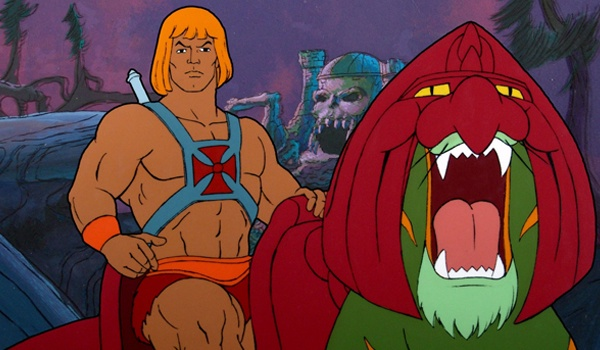
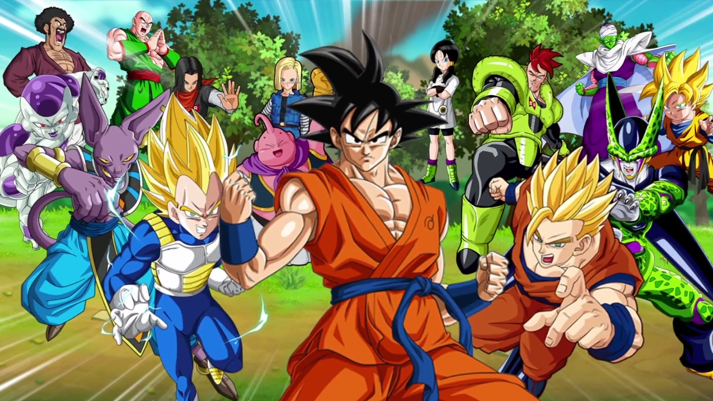
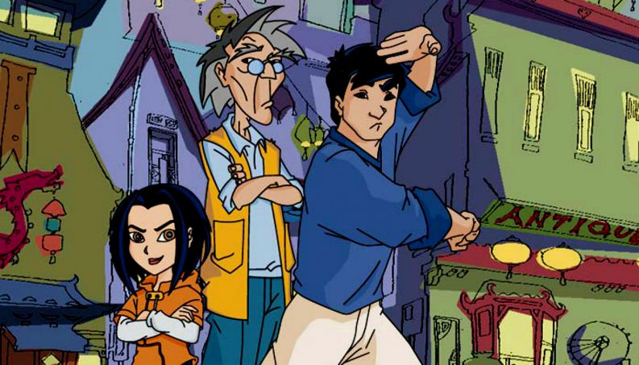
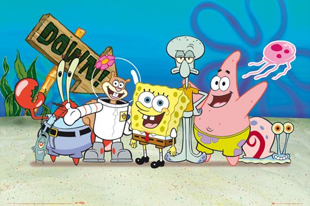

Desenhos que marcaram sua infância

Você que acompanhou a TV Globinho durante algum tempo dos 15 anos que foi ao ar, deve conhecer esses desenhos que vai ver aqui. O programa registrava ótimos números de audiência para a TV Globo e passava a bola da vez para o jornalístico JPB 1ª Edição, quando muitas crianças já se preparavam para irem à escola.
-
Caverna do Dragão
Um desenho que fez bastante sucesso foi a turma de Caverna do Dragão. A história do clássico programa infantil mostra as aventuras de seis jovens que por acidente entram numa nova dimensão e se deparam com seres estranhos. Mas, também tem o lado positivo: eles conhecem o Mestre dos Magos, que a todo tempo os auxiliam com sua sabedoria para fugir do Vingador, o maior de seus inimigos.
-
Três Espiãs Demais
Sam, Clover, e Alex, formam o trio de garotas de Beverly Hills, que de forma inesperada, têm uma nova missão que é entregue pelo chefe Jerry. O desenho em questão surgiu em 2001 e se tornou um grande sucesso durante toda sua exibição pela TV Globinho.
-
He-man
He-Man vivia no planeta Etérnia, um mundo aparentemente medieval e cheio seres mágicos, mas repleto de tecnologias avançadas. Enquanto o planeta é comandado pelo justo rei Randor, o vilão Esqueleto tenta dominar o castelo de Grayskull, e assim ter o controle de todo o universo, que é protegido por He-Man. Com o sucesso, logo vieram dois filmes e diversos consoles de videogames.
-
Dragon Ball (Clássico, Z e GT)
Dragon Ball também vem dos quadrinhos. A série conta a história de Goku, um menino que adora artes marciais e que sai em busca das sete esferas do dragão com a sua amiga Bulma. Ao logo dessa jornada, Goku faz diversos amigos e enfrenta vilões.
O sucesso no Brasil foi tão grande que a TV Globinho exibiu também as temporadas seguintes do clássico Z e GT.
-
As Aventuras de Jackie Chan
Coringa da atração global, As Aventuras de Jackie Chan foi usado várias vezes como substituto de desenhos famosos como Dragon Ball Z. Na série, Jackie Chan é um arqueólogo que vive em San Francisco com o Tio Chan.
Forçado pelo tio, Chan participava de diversas aventuras, quase sempre com uma forcinha de sua sobrinha Jade, que sempre se metia onde não era chamada. Ambos viviam intensamente em busca dos famosos talismãs que continham poderes surpreendentes e significativos.
-
Bob Esponja Calça Quadrada
A série narra as aventuras e os empreendimentos do personagem-título e de seus diversos amigos na fictícia cidade subaquática de Bikini Bottom (Fenda do Biquíni).